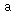

For now, you still have to know a fair amount about the xml2rfc schema to use this tool.
Enter and backspace can be used as you might expect a word processor to behave when you're editing paragraphs or lists.
To insert sections, paragraphs, figures, cross-references, etc., use the toolbar or the XXE insert pane; you'll commonly use "Insert" and "Insert After". Try to learn the keyboard accelerators (command-I, J, typing the start of an element name and expanding it with "space" and inserting with "enter"; command-E to edit the attributes of the current element, etc. See the xxe tutorial, section "Being productive with XXE" for more.)
Lists, paragraphs and sections are inserted after/inside the current one depending on the XXE selection; generally a new element is inserted after the current one if the current one is selected, or at the easiest place inside the current one if the mark is inside the current element.
The <?rfc ?> processing instruction editor at the top of the document is not hooked up to xxe's undo facility. It is essentially a completely seperate editor embedded inside the document in xxe. There's little to do about this, since xxe is a root element editor and has no facilities for editing processing instructions in place before the root element.
Most toolbar items that add elements have behavior that depends on the currently selected object. In general, if the selected object is an element, the item that's added is a sibling to the selected object. If the selection is simply text or there is no selection and the cursor is in text, the item that's added is added at or as close to the cursor as is feasible, generally as a child of the parent item.
- Add Itemized List
Adds an itemized list (
<list style="symbols">)- Add Ordered List
Adds an ordered list (
<list style="numbers">)- Add other list
- empty
Adds an empty list (
<list style="empty">)- letters
Adds a lettered list (
<list style="letters">)- hanging text
Adds a list using hanging text (
<list style="hanging">)
- Add paragraph or list item
Add a paragraph or list item at the current level.
- Add section
Add a section - if a section is currently selected, add a sibling at the same level; otherwise, add a subsection within the current section.
- Decrease section level
Decrease the indentation of the explicitly selected section, by making it a sibling of its parent. (e.g., turns 3.2.1 into 3.3 and if there was a 3.3 that becomes 3.4)
- Increase section level
Increases the indentation of the explicitly selected section, by creating an empty section inside which to enclose it. Note that this never undoes the effect of the decrease function.
- Add table
Adds a <texttable> and related elements.
 Add figure
Add figureAdds a <figure> and related elements.
- Swap xref ends
Flips back and forth between an xref and its target. When going from the target back to xref, this flips to the first reference to that target in the document; see the next two commands.
- Previous xref to same target
If there is another xref to the same target earlier in this document, go to it.
- Next xref to same target
If there is another xref to the same target later in this document, go to it.
- Convert to emphasis (spanx)
Convert the selected text to the selected type of emphasis.
- emph
Emphasis - usually italic or *emphasized*
- strong
Strong - usually bold or 'single-quoted'
- verb
Verbatim - usually
monospacedor "quoted"
- Convert to plain text
Converts the selection to plain text. In general, removes any formatting elements around the selection but doesn't lose any text. This has the expected results when applied to a
<spanx>and possibly unexpected results when applied to a figure, table or list.
xxe has many built-in useful keyboard shortcuts; you rarely need to use the mouse for many uses. The xxe user's guide has a great section on productivity with xxe. In addition to the general keyboard shortcuts described there, the xml2rfc plugin adds the following shortcuts:
| Keyboard Shortcut | Command |
| Shift-Enter | Add a new section at the same level (e.g., in section 2.1, shift-enter will add section 2.2) |
| Ctrl-MINUS | Decrease this section's level (e.g., will turn section 1.1.1 into section 1.2) |
| Ctrl-EQUALS | Increase this section's level (e.g., will turn section 2 into section 1.2.1) |
| Ctrl-Enter | Append another of the same element (e.g., list item, paragraph, table entry) |
| Ctrl-Shift-Enter | Prepend another of the same element (e.g., list item, paragraph, table entry) |
| F6 | Insert <?rfc include=?> Processing Instruction |
As the user's guide describes, enter, backspace, delete are bound to perform word processor-like joining and splitting of paragraphs. Also, on the Mac, the modifier to use is Command, not Ctrl.